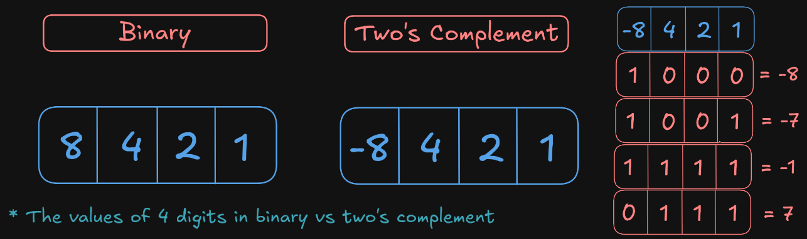

Among the most heavily used instructions are those that copy data from one location to another. (remember, that's what the CPU spends most of its time doing).
There are three main Instruction Classes used to move data:
mov: move
movb: move bytemovw: move word (2 bytes)movl: move long (4 bytes)movs: move with sign extension
movsbw: move sign-extended byte to wordmovsbl: move sign-extended byte to longmovswl: move sign-extended word to longmovz: move with zero extension
movzbw: move zero-extended byte to wordmovzbl: move zero-extended byte to longmovzwl: move zero-extended word to longAn instruction class is simply a group of instructions that perform the same operation but with different operand sizes
Note that the source operand can be an immediate value, a register or a memory address. The destination operand can be either a register or a memory address.
IA32 doesn't allow moving a value from one memory address to another directly, so the source and destination operands can't both be a memory address. In order to move a value from one memory address to another, we need two instructions:
1. Source memory address to register x
2. Register x to destination memory addressNotice how the movs and movz instructions move data from a smaller sized
block to a
larger sized block (from a byte to a word, word to long etc).
When that is done, there will be empty bits in the new block:
movz), the empty bits will be zeroedThis example involves moving the value 173 from a byte-sized block to a word-sized block
movs), the empty bits will be filled with the value
of the most
significant bit of the source byte.This example involves moving the value -6 (represented using two's complement) from a 4-bit-sized block to an 8-bit-sized block. To really understand how (more of why) this works, review how two's complement works. 
The sign extension operation for example could be carried out when we have a signed number stored in one byte but the program wants to use it as a 32-bit value, so it gets sign extended from a byte-sized block to a long-sized block according to the rule mentioned earlier.
When a byte-sized value is being moved to or from a register using the movb instruction, the size of
that register should be 1 byte (so %al instead of ax or eax or
rax), same applies to moving a word-sized value (the register should be ax), and for
moving a long-sized value (the register should be eax).
For example:
movb %dh, %al -> moving from a byte-sized register to a byte sized register
movzbl %dh, %eax -> moving from a byte-sized register (8 bits) to a long-sized register (32 bits)
The Stack is a data structure where values can be added or deleted, but only according to a "last-in, first-out" discipline. The stack plays a vital role in the handling of procedure calls and program data.
As data gets pushed onto the stack, it grows downward towards the lower memory
addresses.
So the top of the
stack is the lowest address, while the bottom of the stack is the highest
address.
The push instruction is used to push data onto the stack, while the pop
instruction is used to fetch data from the stack.
push [data source]
pop [data destination]
Note that size specifications can be used with push and pop, likepushlorpopwetc.
The esp register is referred to as the "Stack Pointer". It holds the address of
the top stack element.
Thus, pushing data onto the stack involves decrementing the stack pointer, while popping data from
teh stack
involves incrementing the stack pointer.
From there, we could implement the push instruction using two instructions: sub
(subtract) and mov.
For example the
behavior or the instruction pushl &ebp is equivalent to:
subl $4, %esp -> decrement the stack pointer
movl %ebp, (%esp) -> store the value of ebp on the stack
pushl instruction is encoded in the machine code as a single byte, whereas the pair of
the
instructions shown above requires a total of 6 bytes.
Previous
Next